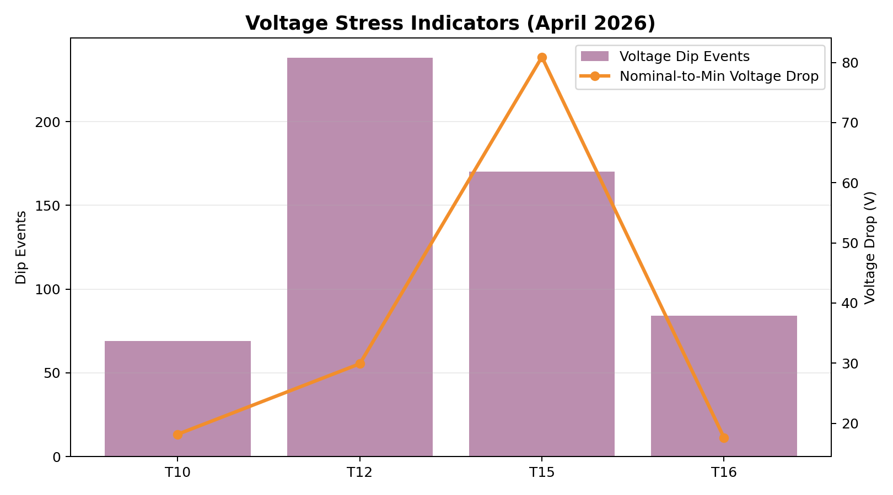
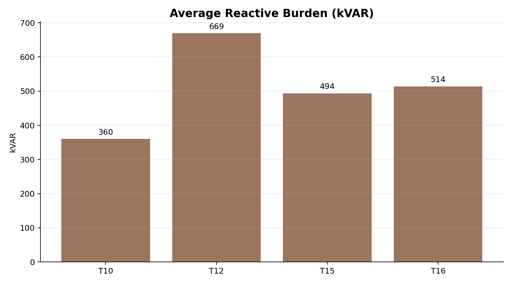
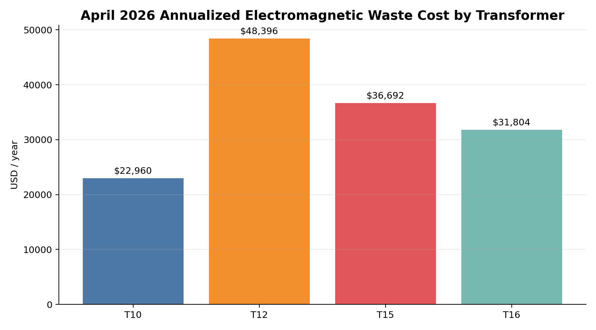
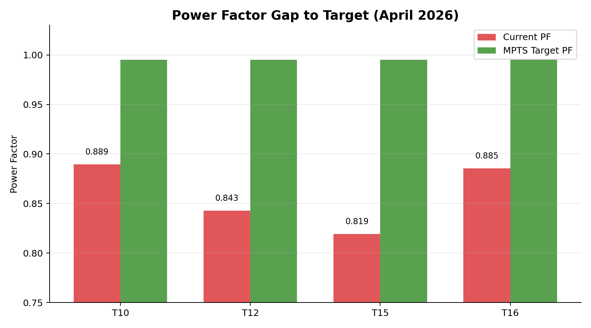
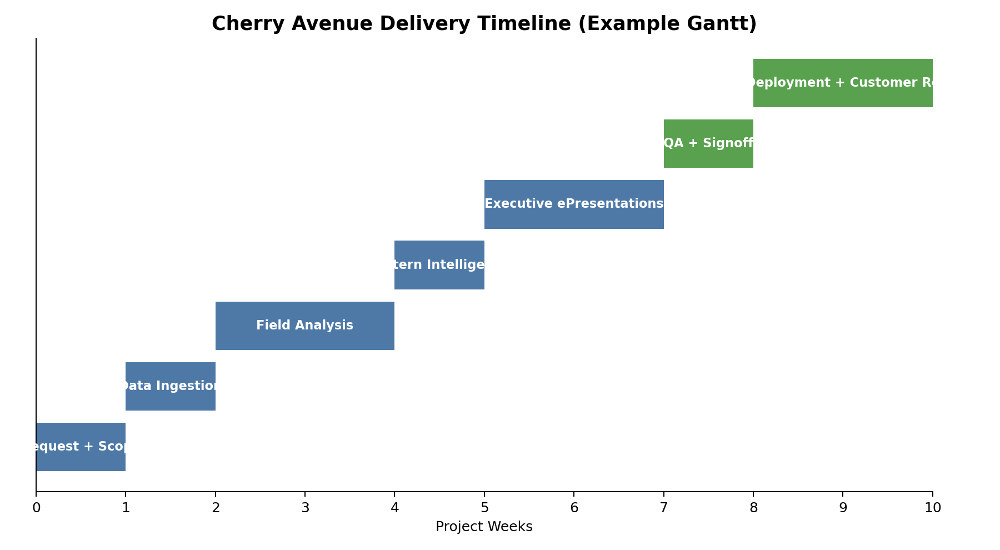
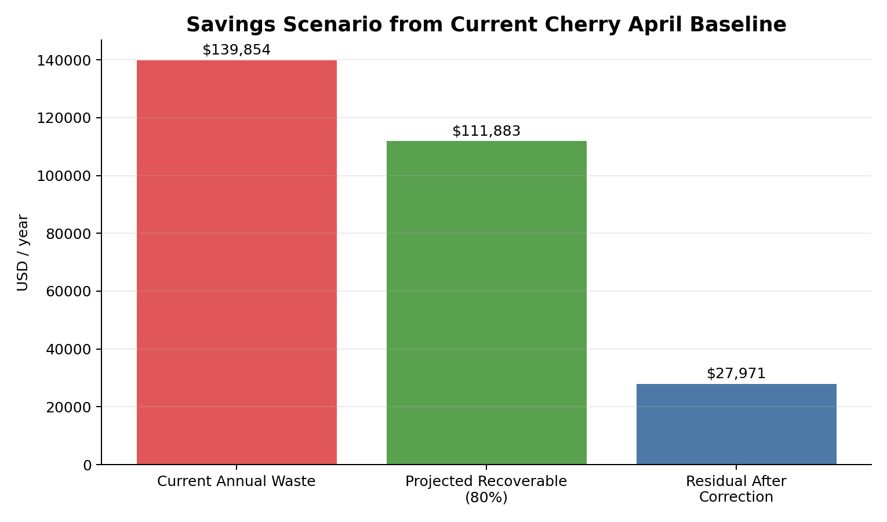

Power-Quality Stress + Pattern Visuals



T10 pattern visual (April 2026)

T12 pattern visual (April 2026)

T15 pattern visual (April 2026)

T16 pattern visual (April 2026)
Four transformer fields analyzed (T10, T12, T15, T16) using April 2026 production data with Unity pattern intelligence and eSwarm packaging for executive review.
Planning-level executive package prepared from `04_APR26` artifacts. Final pricing/engineering requires site scope validation.


The April baseline indicates strongest immediate opportunity on T12 and T15 due to lower PF and higher reactive burden.


This is the customer-facing story arc: request → ingest → analyze → pattern → executive package → QA → deployment.
run_id = "CHERRY-APR26-EXEC" intake = Catherine.normalize(request) analysis = Heinrich.run_pipeline(intake) patterns = William.validate(analysis) voice = UnityFaraday.narrate(patterns) deck = ePresentations.compose(analysis, patterns, voice) qa = Gustav.signoff(deck) Oliver.publish_and_notify(qa)

This timeline view can be used during executive walkthroughs to explain how quickly the package goes from request to delivery.

Prepared For: Foster Farms Executive Walkthrough
Period: April 2026 (Cherry Avenue)
Source artifacts: dashboard_data JSON, FIELD reports, pattern outputs in `04_APR26`. Pricing and payback figures are planning-level and require final engineering scope.